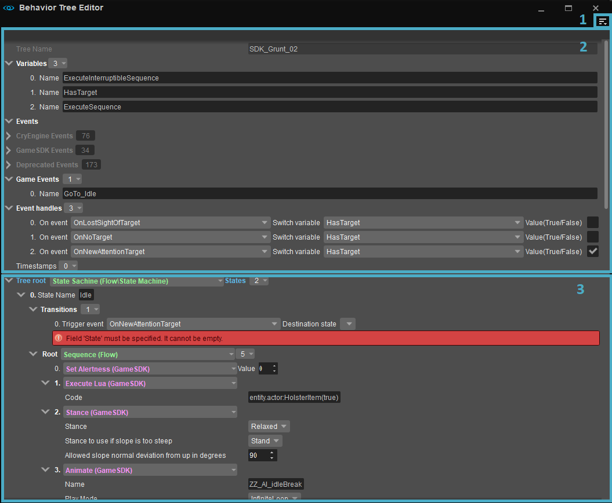
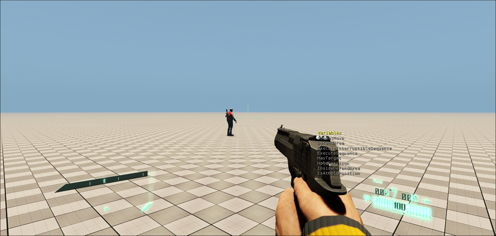
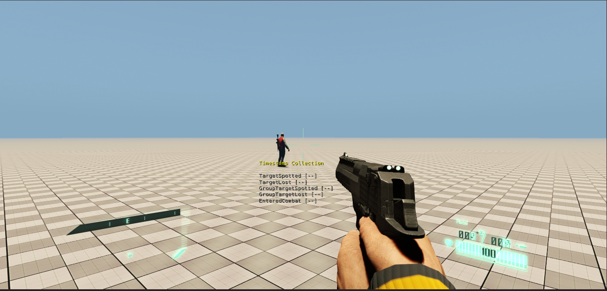
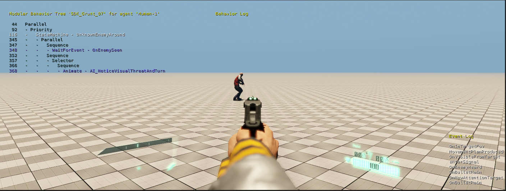
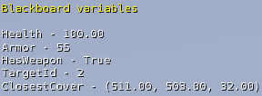
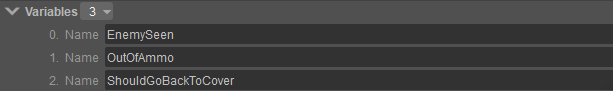
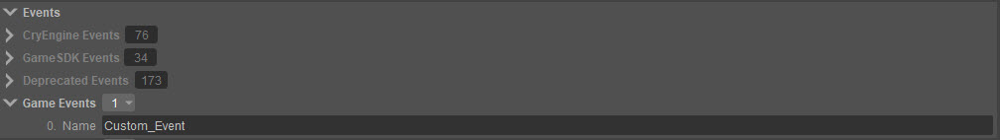
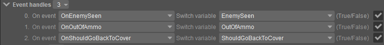
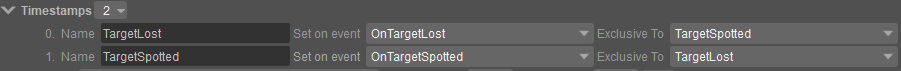

Редактор

Окно редактора
1. Меню
Файл
Вариант | Описание |
|---|---|
Новый | Открывает проводник для создания нового дерева поведения в выбранном каталоге. Созданное дерево сохраняется как файл XML. Доступ к ранее созданным деревьям поведения можно получить через редактор дерева поведения независимо от места их сохранения. Однако, чтобы их можно было использовать в Sandbox и правильно связать с символами AI, деревья поведения необходимо сохранить в папке Скрипты/AI/BehaviorTrees . Пожалуйста, обратитесь к Соединение деревьев поведения раздел руководства «Начало работы с редактором дерева поведения» для примера. |
Открыть | Открывает проводник, чтобы найти и открыть файл XML ранее созданного дерева поведения. |
Сохранить | Сохраняет изменения, внесенные в загруженное в данный момент дерево поведения. Изменения невозможно сохранить, если в дереве есть неустраненные ошибки. |
Сохранить как... | Открывает проводник для изменения места сохранения и/или имени загруженного в данный момент дерева поведения. |
Последние файлы | Показывает список недавно загруженных деревьев поведения. |
Посмотреть
Вариант | Описание |
|---|---|
Показать номера строк XML | Включает номера строк рядом с каждым узлом в редакторе дерева поведения, которые соответствуют фактическим номерам строк в формате XML дерева поведения. Номера строк XML особенно полезны при поиске и исправлении синтаксических ошибок вручную в файле XML дерева поведения. Для этого потребуется редактор XML. |
Показать комментарии | Включает текстовые поля для комментариев разработчика рядом с каждым узлом в редакторе дерева поведения. |
Встроенные события | Включает CryEngine, GameSDKи/или Устарело встроенные категории событий для использования при построении дерева поведения с помощью редактора дерева поведения. Когда категория включена, События раздел блока «Определения данных» (номер 2 в Окно редактора изображение выше) включает список событий из этой категории. Эти события можно использовать в дереве, выбрав их из раскрывающихся меню узлов, для которых необходимо указать события. Отключение Встроенное событие Категория, когда ее события используются в редакторе дерева поведения, будет генерировать сообщения об ошибках в текущем дереве. При загрузке существующего дерева поведения, использующего встроенные события, обязательно включите необходимые Встроенное событие категория; в противном случае редактор объявит все встроенные события, включенные в дерево, как определяемые пользователем события. |
Панели инструментов
| Вариант | Описание | ||||
|---|---|---|---|---|---|
| Настроить | Открывает окно настройки панели инструментов, позволяющее пользователям настраивать существующие панели инструментов и/или создавать новые панели инструментов в редакторе дерева поведения. | ||||
| Блокировка панелей инструментов | Если этот параметр отключен, положения панелей инструментов и разделителей в редакторе дерева поведения можно изменить путем перетаскивания. | ||||
| Проставки | Следующие параметры позволяют пользователям использовать разделители при позиционировании панелей инструментов.
Проставки Опции меню доступны только тогда, когда Панели инструментов → Заблокировать панели инструментов отключен. | ||||
| Панели инструментов | Перечисляет все стандартные и пользовательские панели инструментов (если таковые имеются), созданные для редактора дерева поведения, что позволяет пользователям выбирать, какую панель инструментов они хотят скрыть или отобразить. |
Отладка
Параметры меню «Отладка» обеспечивают в режиме реального времени экранную визуализацию состояния выполнения дерева поведения в игровом режиме (Ctrl + Г). Предполагая, что тестируемое дерево поведения назначено агенту AI, агент можно выбрать для отладки с помощью ai_DebugAgent CVar, который принимает следующие значения:
- ближайший: выбирает агента, ближайшего к камере видового экрана.
- вид на центр: выбирает агента, находящегося в данный момент в центре камеры видового экрана.
- имя: выбирает агента AI по имени, где значение CVar имя соответствует имени целевого агента.
Вызов CVar без параметра останавливает всю визуализацию. Альтернативно, находясь в игровом режиме (Ctrl + Г), нажав клавишу косой черты (/) выбирает для отладки агента AI, расположенного в центре игровой камеры.
Вариант | Описание |
|---|---|
Показать дерево | Отображает информацию, относящуюся к активной ветви дерева поведения, в верхнем левом углу экрана в текстовом формате следующим образом: Modular Behavior Tree '<behavior_tree_name>' for agent '<agent_name>', <XML_line_number> ` <Type_of_executed_node>, где узлы с настраиваемой информацией, такие как узлы конечного автомата, представлены белым текстом, узлы действий — синим текстом, а другие промежуточные узлы — серым текстом. Показать дерево опцию отладки также можно включить через CVar ai_ModularBehaviorTreeDebugTree.
|
Показать переменные | Отображает информацию, связанную с оценкой переменных дерева поведения, например, переменных, которые возвращают значение. Правда поскольку их результаты выделены желтым цветом. Альтернативно включить через ai_ModularBehaviorTreeDebugVariables Cвар.  |
Показать временные метки | Отображает информацию, связанную с выполнением временных меток дерева поведения, при этом активные временные метки выделяются желтым цветом. Альтернативно включить через ai_ModularBehaviorTreeDebugTimestamps Cвар.  |
Показать события | Отображает поток событий, созданных во время выполнения дерева поведения, в журнале событий в правом нижнем углу экрана, при этом последнее выполненное событие отображается вверху. Альтернативно включить через ai_ModularBehaviorTreeDebugEvents Cвар.  |
Показать журнал | Отображает общий журнал дерева поведения в центре экрана. Альтернативно включить через ai_ModularBehaviorTreeDebugLog Cвар. Дополнительную информацию о записи сообщений в журнал отладки см. Использовать журнал отладки Техническая документация. |
| Показать доску | Отображает содержимое Blackboard дерева поведения во время выполнения.  Blackboard — это структура данных, поддерживаемая деревом поведения, содержащая переменные и значения, относящиеся к агенту AI. Пожалуйста, обратитесь к нашему техническая документация для получения дополнительной информации. |
Показать все | Включает все вышеперечисленные параметры. |
Показать статистику | Отображает статистику использования памяти дерева поведения. |
История выполнения | Записывает историю выполнения выбранных агентов AI в файл журнала покадрово. Опции, предоставляемые этой опцией, включают в себя:
|
2. Определения данных
В разделе блока «Определения данных» редактора дерева поведения объявляются определяемые пользователем данные, такие как переменные, события, временные метки и дескрипторы событий.
Переменные
Переменные по своей природе являются логическими, значения которых читаются/записываются в процессе выполнения и принятия решений в дереве поведения.

Список пользовательских переменных
Эти переменные используются узлами дерева поведения, а их значения обновляются с помощью событий и меток времени. Чтобы вставить/добавить переменную,
- Нажмите раскрывающийся список в Переменные раздел Редактора и выберите в меню параметры вставки/добавления,
- Это создает новый Имя поле; введите имя переменной в соответствующее поле.
Чтобы удалить все переменные, выберите Удалить вариант из раскрывающегося списка. Число, включенное в раскрывающийся список, указывает количество созданных переменных в дереве поведения.
События
События используются для информирования агентов AI о возникновении определенных сценариев в игре, заставляя их реагировать соответствующим образом. Например, агент, получающий OnEnemySeen событие, когда игрок замечен, можно запрограммировать на ответную стрельбу по игроку.
Как упоминалось ранее, редактор дерева поведения уже включает ряд встроенных событий, которые можно использовать при разработке дерева.
Хотя эти события определяют обстоятельства, наиболее распространенные и имеющие отношение к AI в игре FPS, пользователи также могут определять собственные события.

События
Чтобы определить пользовательское событие,
- Нажмите кнопку Игровые события раскрывающийся список и выберите опцию вставки/добавления в созданном меню.
- Это создает Имя поле в Игровые события раздел; введите название пользовательского события в соответствующем поле.
Чтобы удалить все созданные события, выберите значок Удалить все вариант из Игровые события раскрывающийся список. Число, включенное в Игровые события раскрывающийся список указывает количество созданных событий.
Дескрипторы событий
Дескрипторы событий используются для изменения значения одной или нескольких ранее определенных переменных при возникновении определенного события.
В случае примера, приведенного в События раздел выше, значение переменной EnemySeen можно установить на Правда когда агент получает OnEnemySeen событие.
Затем агента можно запрограммировать так, чтобы он стрелял в игрока всякий раз, когда значение EnemySeen переменная установлена на Правда, и выполнять другое поведение, когда Ложь.

Дескрипторы событий
Чтобы вставить/добавить новый дескриптор события,
- Нажмите кнопку Дескрипторы событий раскрывающийся список и выберите опцию вставки/добавления в созданном меню.
- Это создаст новую запись в Дескрипторы событий раздел со следующими столбцами:
| Поле | Описание |
|---|---|
По событию | Указывает событие, на которое должно быть переключено значение переменной. Опция открывает всплывающее окно, содержащее полный список активированных Встроенный и обычай Игровые события; пользователи могут искать и выбирать определенные события в этом списке с помощью панели поиска вверху. |
Переключить переменную | Выпадающее меню, содержащее полный список созданных переменных; он указывает переменную, значение которой необходимо изменить при наступлении события, выбранного в По событию поле. |
Значение (истина/ложь) | Указывает значение, которому соответствует переменная в Переключить переменную должно быть установлено значение при наступлении события, выбранного в По событию поле. Установленный флажок соответствует значению True, а пустой флажок соответствует значению False. |
- Введите значения в По событию, Переключить переменную и Значение (истина/ложь) поля по мере необходимости.
Временные метки
Временные метки полезны для отслеживания возникновения событий, например, когда в персонажа последний раз стреляли или ранили.
Пользователи могут определить одну или несколько временных меток, которые будут устанавливаться при запуске определенного события, и эти временные метки также могут быть разработаны так, чтобы быть эксклюзивными друг для друга.

Временные метки
Чтобы вставить/добавить временную метку,
- Нажмите кнопку Временные метки раскрывающийся список и выберите опцию вставки/добавления в созданном меню.
- При этом создается запись в Временная метка раздел со следующими столбцами:
Поле | Описание |
|---|---|
Имя | Позволяет пользователям указывать собственное имя для созданной отметки времени. |
Установить на событие | Указывает событие, для которого должно быть установлено значение Timestamp. Опция открывает всплывающее окно, содержащее полный список активированных Встроенный и обычай Игровые события; пользователи могут искать и выбирать определенные события в этом списке с помощью панели поиска вверху. |
Эксклюзивно для | Выпадающее меню, содержащее список всех созданных временных меток; Временная метка, выбранная в этом поле, будет «эксклюзивной» для временной метки, определенной в Имя поле одной и той же записи, что означает, что одновременно будет активна только одна из двух временных меток. Например, рассмотрим две отметки времени. TargetSpotted который отмечает, что игрок замечен вражеским агентом, и TargetLost это отмечает, когда агент теряет игрока из виду. Было бы разумно сделать эти две временные метки эксклюзивными друг для друга, поскольку агент AI не заметит и не потеряет игрока из виду одновременно. |
3. Дерево поведения
Раздел «Дерево поведения» используется для построения фактической структуры дерева с помощью редактора дерева поведения и, как следствие, всегда должен начинаться с корневого узла (обозначаемого Корень дерева поле).
Поведение дерева затем определяется путем объединения различных типов узлов.
В зависимости от их функциональности/назначения эти узлы были разделены на шесть различных категорий, а именно: Поток, Условия, Время, Ядро, Отладка и GameSDK; общие характеристики этих категорий и узлов, которые они содержат, поясняются в соответствующих разделах.
Чтобы начать создание дерева поведения, определите его первый узел из Корень дерева раскрывающийся список в блоке «Дерево поведения» (номер 3 в Окно редактора изображение выше).
В зависимости от выбранного типа узла введите значения необходимых параметров или вставьте/добавьте дочерние узлы по мере необходимости.
Контекстные меню
Щелчок правой кнопкой мыши в редакторе дерева поведения открывает контекстное меню, параметры которого могут различаться в зависимости от выбранной области следующим образом.
Вариант | Описание | ||||||
|---|---|---|---|---|---|---|---|
Вставить | Используется для добавления переменной, пользовательского игрового события, дескриптора события или записи времени в текущую конфигурацию дерева поведения. Эта опция доступна только при щелчке правой кнопкой мыши по значку Переменные, Игровые события, Дескрипторы событий и Временные метки поля блока «Определения данных». | ||||||
Добавить | Похоже на: Вставить, эта опция также используется для добавления переменной, пользовательского игрового события, дескриптора события или записи времени в текущую конфигурацию дерева поведения. Доступно при нажатии правой кнопкой мыши на Переменные, Игровые события, Дескрипторы событий и Временные метки поля блока «Определения данных». | ||||||
Удалить все | Удаляет все определенные пользователем события из-под Игровые события раздел блока «Определения данных». Виден, когда Игровые события поле щелкается правой кнопкой мыши. | ||||||
Удалить детей | Удаляет все дескрипторы событий и временные метки, определенные в разделе Дескрипторы событий и Временные метки разделы соответственно. Виден, когда Дескрипторы событий и Временные метки поля щелкаются правой кнопкой мыши. | ||||||
Развернуть | Разворачивает свернутый раздел/узел редактора дерева поведения (например, Переменные, События, Игровые события или иначе), чтобы раскрыть все элементы дерева поведения, определенные в этом разделе/узле. | ||||||
Свернуть | Сворачивает раздел/узел редактора дерева поведения, чтобы скрыть элементы, определенные в нем. | ||||||
Установить | Перечисляет все категории доступных узлов, позволяя пользователям добавлять выбранные узлы в дерево поведения. Эта опция появляется при щелчке правой кнопкой мыши узла в редакторе дерева поведения. | ||||||
Отменить | Возвращает последнюю запись или изменение, внесенное в текущую конфигурацию дерева поведения. | ||||||
Повторить | Восстанавливает любые изменения или записи, внесенные в дерево поведения, которые ранее были отменены с помощью Отменить вариант. | ||||||
Вырезать | Удаляет и копирует содержимое текстового поля в буфер обмена. | ||||||
Копировать/Вставить | Может использоваться для копирования/вставки пользовательского игрового события, дескриптора события, временной метки, структуры дерева поведения или содержимого текстового поля в/из буфера обмена. | ||||||
Удалить | Полностью удаляет содержимое текстового поля. | ||||||
Копировать все/Вставить все | Известная проблема: Копировать все и Вставить все опции могут работать некорректно. | ||||||
Фильтр... | Фильтрует содержимое редактора дерева поведения на основе введенной строки. При выборе этой опции в верхней части окна редактора создается панель поиска, поэтому любая строка, введенная в эту панель, действует как фильтр; Редактор дерева поведения будет отображать только те элементы дерева, которые соответствуют тексту введенной строки. Прессование Ctrl + Ф в редакторе дерева поведения также выполняет ту же функцию. | ||||||
Фильтровать по |
|